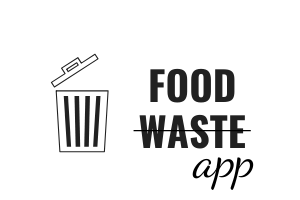

Now you can have a look at projects that I've built by myself or took part in. Some of them are still in development. For more go to my GitHub, there you can have a look at smaller apps (SPA) that I've created and others.
Static landing page of Food Waste app created by a 4-person team, that allows you to search for recipes basing on what you have in your fridge. Page was developed using HTML5, CSS3, ES6.
React based application working on Firebase, created using SemanticUI and self-developed components. Welcomes user with dashboard with some analitycal data and then allows to filter through recipes from base and also to add new ones.
Additional game to the landing page of Food Waste app developed using Object Oriented JavaScript.
React based application that is gonna help junior developers prepare to their interview, both technical and soft. User will have a choice of tests or flip-cards to study and forum to look for advanced explanations and to ask more complicated questions.